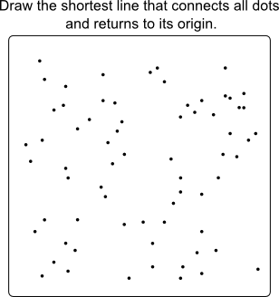
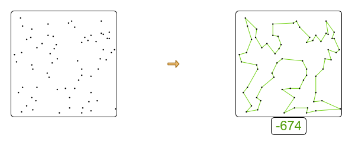

How good are human planners?
Are we smarter than machines when it comes to planning? Or can automated planning beat humans?
I did an experiment with a group of innocent software engineers. These are the results.
Methodology
During my last 2 deep dive trainings, I asked the attendees to manually solve a simple planning problem,
to introduce them to the difficulty of planning optimization.
I gave them a Traveling Salesman Problem (TSP) and asked them to connect the dots to find the shortest tour possible:

They laughed. Isn’t this a kids game? Yes, except that the dots are not numbered and you’re not looking for Mickey Mouse.
Calculating a trip’s distance on paper is not practical,
so they recreated their trips in the TSP example in OptaPlanner examples (only since 6.3.0.Beta1) to calculate the distance automatically.
You can try this assignment yourself: right-click in the example’s UI to manually create a trip.
Their first attempt and their best attempt in a time window of almost 30 minutes was recorded.
This is the optimal solution that we hoped to find:

Results
No one found the optimal solution. Most people didn’t even find a near optimal solution (including me):
| First attempt | Best attempt | |
|---|---|---|
Optimal | 674 | 674 |
Average human | 752 | 732 |
Average human worse than optimal | 12% | 9% |
| First attempt | Best attempt |
|---|---|
825 | 825 |
821 | 821 |
813 | 813 |
892 | 807 |
802 | 802 |
792 | 792 |
772 | 772 |
762 | 762 |
798 | 757 |
765 | 743 |
758 | 742 |
727 | 727 |
765 | 714 |
755 | 714 |
712 | 712 |
712 | 712 |
729 | 710 |
759 | 710 |
723 | 706 |
705 | 705 |
796 | 702 |
738 | 702 |
702 | 702 |
720 | 701 |
725 | 700 |
717 | 699 |
699 | 699 |
701 | 693 |
692 | 692 |
735 | 688 |
692 | 676 |
Do we need a human planner?
We still need a human planner: not to search for the best plan, but to define what to search for.
A search engine like Google can search the web, but it needs to be told what to look for.
Similarly, any automated solver (including OptaPlanner) can optimize a planning,
but it needs to be told what to optimize for.
In a non-trivial enterprise, defining what the business wants/needs to optimize, is not a simple task.
It involves talking to the business departments and iteratively tweaking those constraints.
We still need a human to that.
And as the business changes (market changes, labor regulations changes, …) those constraints will change too.
Again, we need a human to watch over the planner.
We also need someone to input the data and validate the results.
Furthermore, the human needs to stay in control.
But ask yourself: Who of these 2 contenders will win a knowledge quiz?
The smartest person on the planet
An average graduate with internet and Wikipedia access
Similarly, who do you want to optimize the planning in your organization? Someone with or without automated planning assistance?